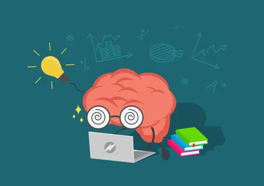

Proyecto 1
Impacto de la IA en la Educación
Analiza cómo la inteligencia artificial transforma los procesos de enseñanza y aprendizaje.
Categoría: Tecnología Educativa
Ver detalleAnaliza cómo la inteligencia artificial transforma los procesos de enseñanza y aprendizaje.
Categoría: Tecnología Educativa
Ver detalleEstudia la importancia de las competencias digitales en estudiantes universitarios.
Categoría: Educación Digital
Ver detalleExplora el modelo de aula invertida y su impacto en el aprendizaje activo.
Categoría: Pedagogía
Ver detalle
Presenta técnicas de organización y estudio para mejorar el rendimiento académico.
Categoría: Formación Académica
Ver detalleAnaliza riesgos digitales y medidas para proteger la información universitaria.
Categoría: Informática
Ver detalle